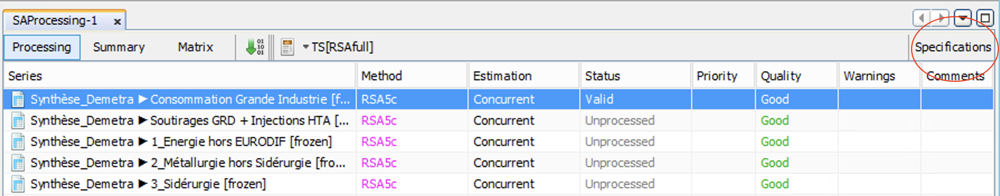
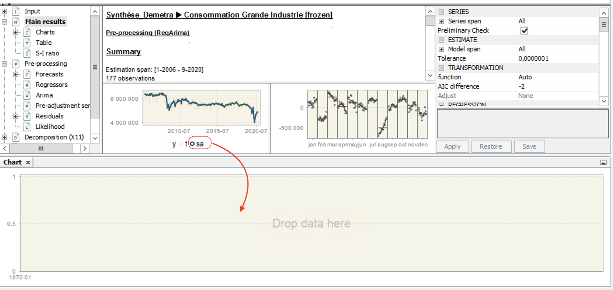
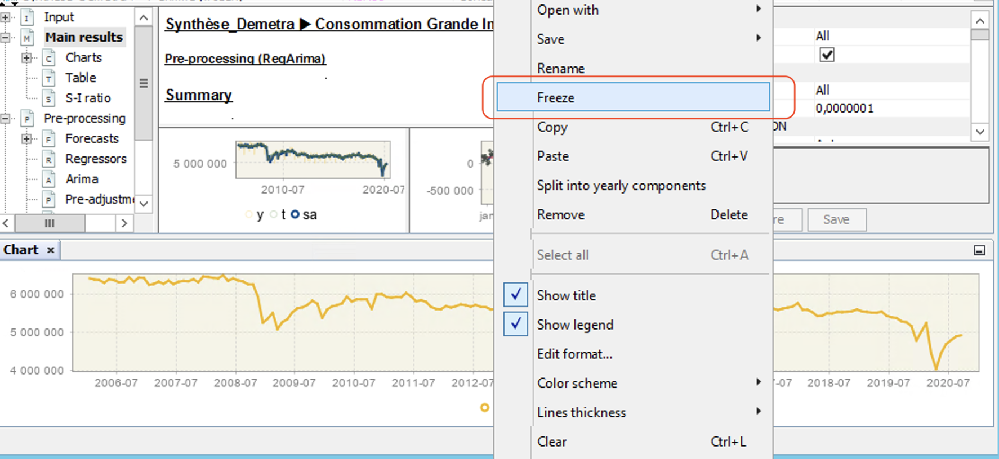
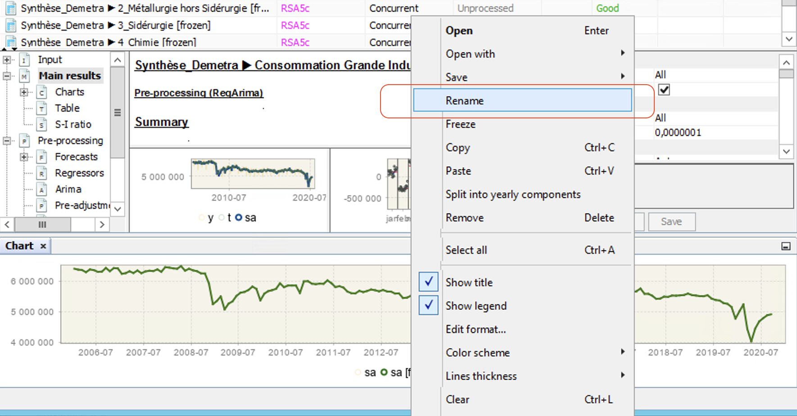

5 - Pré-ajustement
Désaisonnaliser une série temporelle
L’objectif de ce TP est d’analyser la qualité du pre-ajustement et de modifier, si nécessaire, la spécification
1 Lecture du modèle Reg-ARIMA
Pour plusieurs séries, essayer de trouver et d’écrire (sur une feuille de papier), le modèle ARIMA utilisé (ordres et coefficients).
Vérifier le résultat dans la fenêtre
Pre-processing > ARIMA.
2 Spécification du modèle Reg-ARIMA
Cliquer sur une série et appuyer sur le bouton Specification en haut à droite de la fenêtre de votre multiprocessing :

Dans la suite vous allez modifier des options dans la spécification : pour les appliquer, appuyer sur le bouton Apply.
Dans JDemetra+, il y a une façon simple de comparer les résultats de différentes spécifications :
Faire une nouvelle fenêtre graphique (
Tools > Container > Chartpar exemple).Faire glisser la composante souhaitée (généralement la série désaisonnalisée) dans la nouvelle fenêtre graphique. Pour cela, cliquer par exemple sur la composante
sadu graphique de la fenêtreMain resultset faite glisser la série (en laissant le clic gauche appuyé) :

- Une fois la nouvelle série ajoutée, cliquer dessus sur la légende, ensuite clic-droit et choisir
Freeze:

- Cela va créer une copie de votre série. Il ne vous reste plus qu’à la renommer (clic gauche dessus sur la légende puis
Rename) pour vous y retrouver :

- Modifier la spécification et appuyer sur
Apply: vous verrez que la sériesasera modifiée !
2.1 Transformation
Essayez de changer le schéma de décomposition (onglet
TRANSFORMATION > function) :Qu’est-ce que vous remarquez ? Est-ce qu’il y a eu des changements dans la partie le pré-ajustement ?
Est-ce que les critères AICc et BIC ont été modifiés ?
2.2 Régresseurs calendaires
Essayez de changer le jeu de régresseurs jours ouvrables :
Que pouvez-vous noter sur les tests de Student, Fischer, coefficients, AICc et BIC ?
Est-ce qu’il y a des effets calendaires résiduels ?
Quelle est la qualité du modèle Reg-ARIMA ?
2.3 Outliers
Dans la partie
REGRESSION > Pre-specified outliers:- Ajouter des outliers qui vous semblent pertinents et qui ne sont pas détectés par JDemetra+ (si vous avez connaissance d’un évènement particulier)
Essayer de changer le seuil critique de détection des outliers (
Critical value.Que remarquez vous sur le nombre d’outliers, l’AICc et le BIC ?
En quoi cela affecte la qualité de l’ajustement et des résidus du modèle ?
Essayer de changer le type d’outliers détectés.
2.4 Forecasts results
Aller dans la partie
Pre-processing > Forecasts > Out-of-sample test:Que comprenez-vous ?
En quoi c’est utile ?
3 Fine-tuning du pre-processing
Essayez de répondre aux questions suivantes :
Autocorrélation des résidus du modèle Reg-ARIMA :
- Comment résoudre ce problème ? Est-ce grave ?
Problème d’hétéroscédasticité des résidus du modèle Reg-ARIMA :
- Comment résoudre ce problème ? Est-ce grave ?
Problème de normalité des résidus du modèle Reg-ARIMA :
- Comment résoudre ce problème ? Est-ce grave ?
Problème dans les tests Out-of-sample :
- Comment résoudre ce problème ? Est-ce grave ?